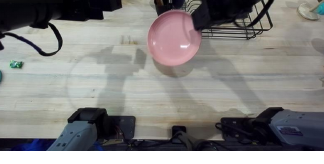
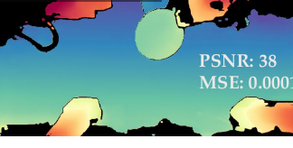
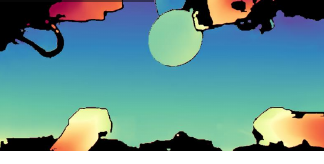

Preprint · 2026
Flex-π: A Multi-Stream World-Action Model with Compute Flexibility
One checkpoint. Any observed inputs, any generated futures, and a speed–accuracy operating point you pick at deployment.
*Equal contribution.
World-action models (WAMs) that jointly predict future observations and actions have recently outperformed parameter-equivalent vision-language-action models on manipulation, but three limitations hamper their deployment: they predict in pixel space, lack explicit 3D grounding, and bake their inference cost in at training time.
We introduce Flex-π, a single policy that resolves all three through one design principle: every visual signal a manipulation policy needs — RGB, 3D, and object semantics through DINO — can be embedded into a shared, pre-trained latent space. Because every modality lives in the same latent space, applying independent per-stream dropout on inputs and joint outputs during training yields a single checkpoint that supports any combination of input and output streams at inference, to support compute and input flexibility.
After pre-training on AGIBOT World and fine-tuning per benchmark, Flex-π matches or outperforms the strongest VLA baseline in fast, action-only output mode and exceeds the strongest WAM baseline at full joint generation on RoboTwin and LIBERO, and significantly outperforms π0.5 on held-out generalization tasks on a real bimanual YAM robot.

← scroll figure →
Flex-π in action
One checkpoint, deployed on a bimanual YAM workcell across contact-rich, sub-millimetre and long-horizon tasks — from teleoperated data collection through to self-repair.
Three views of one moment
Flex-π reads the same observation as appearance, semantics and geometry, and generates all three futures alongside the action. What goes in and what comes out are runtime arguments rather than architecture, so all 56 combinations are deployable from the same weights — try them below. How that is trained is in How it works.
How these panels were made: RGB is the source clip. Pointmap is a false-colour ramp over image luminance and height — it mimics the look of Figure 3 but carries no geometry. DINO is a real PCA, but over 7-D colour/context/texture patch descriptors rather than DINOv3’s 768-D features. The action strip beside them plots the real 14-DoF trajectories of one recorded episode. None of the visual panels are model output; the paper’s real VAE pointmap reconstruction is in Figure 3 below.
All three futures are co-denoised with the action, and the action expert reads every one of them.
The frontier, run in real time
A new observation arrives and five policies start computing, side by side on the time axis. The moment a policy's inference completes it stops — then climbs to its task-completion score. Flex-π stops first and climbs highest.
The fast ones stop almost together — then look who climbs where. At the deployed four denoise steps, Flex-π's action-only path completes in 60 ms, before every baseline — π0.5 (66 ms), Fast-WAM (86 ms), ManiFlow (103 ms) — and climbs 22.3 points above the strongest of them; a beat later, full joint generation stops at 193 ms and climbs highest of all. Both Flex-π points are the same checkpoint, differing only in the output mask mout; intermediate configurations are deployable from the same weights and are not separately evaluated. Task completion is averaged over every evaluated condition of the real-world suite (Figure 12); latency is a single inference on an RTX 5090.
What Flex-π does
One checkpoint on a bimanual YAM workcell: a sub-millimetre insertion, an eight-stage self-repair, three contact-rich tasks, and four conditions it was never fine-tuned on.
01Precision and long horizons
The evaluation opens with its two hardest tasks: a sub-millimetre insertion held between two moving hands, and an eight-stage repair in which the tolerances tighten as the sequence advances.
Self-repair gripper
The robot repairs its own gripper over eight stages that must be completed in order, split between the two arms, and the tolerance chain tightens as the sequence advances.
Action by action, against the baselines
The three insertion and fastening actions that carry the points. For each, a baseline attempts the same action Flex-π completes — the tolerance tightens from ±0.5 mm to ±0.25 mm as the sequence advances.
STAGE 3Insert gripper — 19 mm part into a 20 mm holder, ±0.5 mm
STAGE 5Insert screw — 4.5 mm M5 shank into an 8 mm hole, ±1.75 mm
STAGE 7Screw in — 4 mm bit into a 4.5 mm socket, ±0.25 mm, the tightest stage
Clearing each stage nine times in ten still finishes the whole episode only 43% of the time, so partial credit alone cannot separate a policy that nearly finishes from one that finishes. Action-only → full joint generation adds 21.9 points of partial credit but 40 points of full-task success (15% → 55%).
Key unlocking
The robot hands the key to its other arm, then inserts it into a handheld padlock — so what the policy controls is the relative pose of two independently actuated end-effectors, under in-hand pose uncertainty that becomes unobservable the moment the grippers close.
02Dexterity in the real world
Three contact-rich tasks on a stationary bimanual YAM workcell — two 6-DoF arms, 14 commanded degrees of freedom, three calibrated stereo cameras. Each demands precise bimanual coordination and sustained contact. Rollouts are scored under a partial-credit rubric, averaged over 10 rollouts per task.
Unzip the bag
Zip the bag closed
Scored against π0.5
The fast action-only path already beats π0.5 on every task while matching its latency; enabling joint visual generation adds a further +12, +5 and +45 points. Averaged over the three tasks, Flex-π (Joint) reaches 88.0% against 44.7% — nearly 2×.
Sourcing: Flex-π's per-task scores and the +12/+5/+45 deltas are stated in the paper; the Average group is the unweighted mean of the three per-task scores rather than a value the paper prints. π0.5's scores on Put Plate on the Rack and Sort Utensils are read from the paper's Figure 8, which carries no data labels — only its Clean the Kitchen Rack value (15%) is given in prose.
The workcell
03Robustness in cluttered scenes
Deployment scenes are rarely clean. We re-run the same three tasks with the workspace deliberately cluttered — novel distractor objects, never seen during fine-tuning, filling every scene — and, for Put Plate on the Rack, an unseen plate and rack of a different type. Flex-π keeps performing.
The advantage is most pronounced exactly where appearance cues become unreliable and success demands geometric and physical rather than appearance-based generalization — echoing the LIBERO-Plus trend.
Halving the data
Flex-π (Joint) degrades least — −20.0 points against −37.5 for π0.5.
How it works
What is behind the diagram above: the shared latent space that carries appearance, geometry and semantics together, and the two masks that let one set of weights cover every input/output combination.
One latent space, one backbone
Appearance, geometry and object semantics normally mean three separate pipelines. Flex-π carries all three through a single shared backbone.
Three streams, one shared space
RGB and 3D pointmaps go through the same frozen video-generation VAE. DINOv3 semantics come from a separate frozen encoder and are projected into the same backbone by a linear adapter.
RGB — appearance
The observation image, encoded to latent tokens that inherit spatiotemporal priors from internet-scale video pre-training.
Enc(ot) · frozen Wan-2.2 VAE
DINO — object semantics
Object-level semantic tokens that ground appearance and geometry. Patch grids are folded 2×2 into the channel dimension, removing 75% of the tokens losslessly.
DINO(ot) · frozen DINOv3
Pointmap — 3D geometry
A 3D pointmap pushed through the same frozen VAE. An encoder trained only on RGB already reconstructs pointmaps well (Figure 3), so no geometry-specific encoder is needed.
Enc(pt) · shared VAE weights

← scroll figure →
Why latents instead of pixels
The strongest WAMs predict future images, spending capacity and inference time on pixel-level detail that does not aid control. Flex-π keeps the joint prediction objective but runs it on future latent observations — and because actions are generated jointly with those latents under shared self-attention, the policy still reads the model's evolving picture of the future, with no pixels decoded.

RGB

One checkpoint, any combination of streams
Because the two masks are sampled per example rather than fixed, one training run covers every deployment regime — and at inference the masks stop being training noise and become choices.

← scroll figure →
Each training sample draws an input presence mask min over the three visual input streams and an output attention mask mout over the three future visual streams. Every entry is masked independently with 50% probability; rejection sampling on min guarantees at least one visual input survives, and the action stream is never masked.
Crucially, mout is an attention mask, not a loss gate: every future stream is always denoised and always incurs its flow-matching loss. What the mask changes is which futures the action tokens read, so actions are conditioned on a jointly generated future rather than on three independent ones.
Observed streams enter the backbone; the action expert reads the checked futures.
Cross-modality forcing
Dropping a stream from the input does not stop the model generating its future — and being forced to do so is worth 21.2 points of RoboTwin success.
Because the two masks are drawn independently, a stream dropped from the input is still denoised at the output: the model must synthesize that modality's future from whatever streams remain — imagining future pointmaps from RGB and DINO with no 3D input at all, or DINO semantics from RGB and geometry.
The benefit is not merely robustness to missing sensors. Requiring each modality to be predictable from the others prevents the shared backbone from degenerating into three weakly-coupled channels, and instead demands a representation in which appearance, geometry and semantics are mutually predictive. Ablating it — while holding the mask distribution fixed, so both models observe the same streams — costs 21.2 points of RoboTwin success.
Only the generation rule differs: restricting generation to the streams present in the input drops success from 66.4% to 45.2%.
The futures behind the actions
Every action chunk is generated jointly with a latent future in each stream. Control never decodes those latents — but decoding them afterwards shows what the policy read while acting. Top: the real rollout. Below it: the future Flex-π imagined for that episode, one stream per task.
Predicted futures will appear here once the decoded predictions are exported.
Choosing the operating point
The same weights, invoked with different flags. Toggle the streams Flex-π generates and watch latency and success rate move together.
The paper benchmarks four configurations, adding streams in this order: 68 → 139 → 280 → 398 ms. Per-stream costs are not reported independently, so other combinations are deployable but unmeasured.
A single checkpoint spans a 6× latency range and 25 points of success; the four Flex-π points differ only in the output mask.
Flex-π's action-only path (60 ms) undercuts every baseline — π0.5 (66 ms), Fast-WAM (86 ms), ManiFlow (103 ms) — while full joint generation (193 ms) trades speed for the highest task completion. Chunked execution decouples inference rate from control rate on the 30 Hz robot — one query per 32-step chunk.
How it compares
RoboTwin and LIBERO, data efficiency, stream ablations — and what the design costs.
Simulation benchmarks
One model is the best VLA in its fast mode and the best WAM in its full mode — on RoboTwin the two deployment modes land within half a point of each other.
RoboTwin
| Method | Clean | Rand. | Avg. |
|---|---|---|---|
| Vision-language-action models | |||
| π0 (2024) | 65.9 | 58.4 | 62.2 |
| X-VLA (2025) | 72.9 | 72.8 | 72.9 |
| π0.5 (2025) | 82.7 | 76.8 | 79.8 |
| Flex-π (action-only) | 93.5 | 93.6 | 93.6 |
| World-action models | |||
| Motus (2025) | 88.7 | 87.0 | 87.8 |
| Fast-WAM (2026) | 91.9 | 91.8 | 91.8 |
| LingBot-VA (2026) | 92.9 | 91.6 | 92.2 |
| Flex-π (full joint) | 92.9 | 93.3 | 93.1 |
π0.5 loses 5.9 points moving from clean to randomized scenes; Flex-π loses none — we attribute this to the 3D and DINO streams providing appearance-invariant structure.
LIBERO
One flexible checkpoint already matches the strongest published method in each group — 98.1% action-only and 98.5% at full joint generation. The mode-committed checkpoints in the table below go higher still.
| Method | LIBERO | LIBERO-Plus |
|---|---|---|
| Vision-language-action models | ||
| π0 | 94.1 | 53.6 |
| π0.5 | 96.9 | 84.7† |
| GR00T-N1 | 93.9 | — |
| OpenVLA-OFT | 97.1 | 69.6 |
| UniVLA | 95.2 | 42.9 |
| X-VLA | 98.1 | — |
| Flex-π (action-only) | 98.7 | — |
| World-action models | ||
| LingBot-VA | 98.5 | — |
| Fast-WAM | 97.6 | 65.3† |
| Flex-π (full joint) | 99.2 | — |
†Neither Fast-WAM nor π0.5 reports LIBERO-Plus, so those entries are our own evaluations of the released checkpoints. Flex-π's LIBERO-Plus evaluation is still in progress and is therefore not reported here.
Data efficiency
The margin is widest where demonstrations are scarcest.
At 50 demos per task Flex-π reaches 78.8% against 41.9% for Fast-WAM and 31.4% for π0.5; baselines only close the gap at 500 demos per task.
Which streams actually matter
An ablation over which visual streams are supplied as input at all.
DINO adds 6.8 points over video alone; pointmaps on top of both add a further 20.0. The 3D stream is worth roughly three times what the semantic stream is, on top of it.
Conclusion and limitations
Flex-π embeds RGB, 3D and DINO semantics into a shared latent space, yielding a single checkpoint that supports any combination of input and output streams at inference. It matches or beats the strongest VLA in fast action-only mode and the strongest WAM at full joint generation across RoboTwin, LIBERO and a real bimanual YAM robot. Inference compute flexibility emerges as a natural consequence of multi-stream latent dropout.
BibTeX
@article{yan2026flexpi,
title = {Flex-$\pi$: A Multi-Stream World-Action Model with Compute Flexibility},
author = {Yan, Ge and Liu, Jinghao and Fan, Yuzhi and Cai, Lei and
Liao, Minwen and Zhang, Jesse and Fox, Dieter},
journal = {Preprint},
year = {2026}
}